なぜ聞くか頼まれたのは並べ方のロジック（空白・同じ記事の二度出し・写真の大きさ・押した所へ行く）で、見た目の方向ではありません。前の見本（新聞・雑誌・P5 の 3 案）は、見た目を聞いてしまっていたので外しました。
今の見た目見た目は今の P5（太い枠・硬い影・傾けた札）のまま。下は、指摘のあった場所ごとの「今の本番」（左）と「新しい並べ方」（右）です。「穴」は、カードのすき間（約 40px）より大きい空きの面積の割合です。「新しい並べ方」は先頭に出す記事の数を増やしています。多すぎるときは × のメモに書いてください。
答えで何が変わるか○ なら、本番のこの場所を新しい並べ方に入れ替えます（全部の版面・店長とお客さま共通の規則）。× なら、そこだけ直して作り直します。本番の写真は無料の枠の都合で灰色の所があります。
滑雪
今の困りごと 指摘のあった場所（空白・重複・写真の大きさ）。数字は 2 つの画面を同じ幅で同じ方法で数えたもの
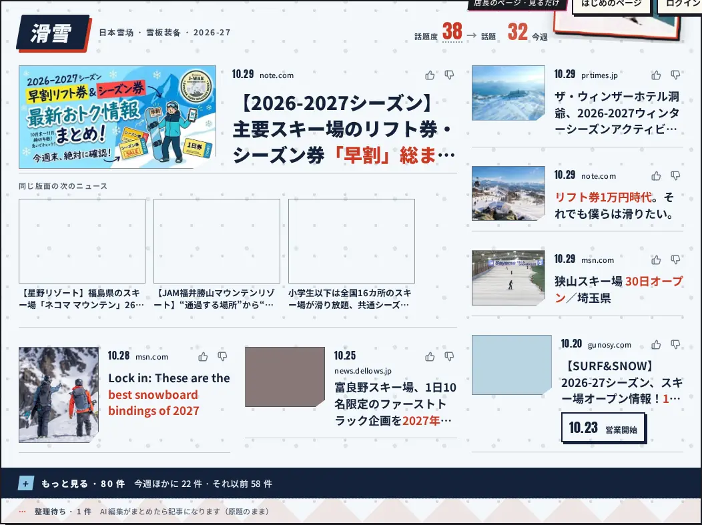
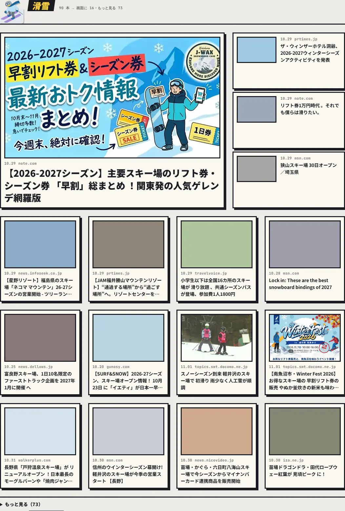
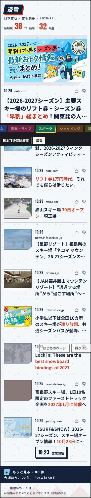
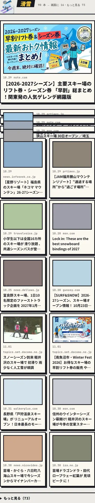
- 直した規則：同じ記事・同じ写真はページ全体で 1 回だけ（この場所で外した重なり 1 本）・升目の最後の段に穴を作らない・右の列は先頭の高さにそろえる・写真のない記事は字だけの札
- PC：穴 1% → 0%・中が空いたカード 0 → 3 枚・写真なし 0 → 0 枚・画面に出る記事（もっと見るは閉じたまま） 7 → 16 本
- スマホ：穴 0% → 0%・中が空いたカード 0 → 0 枚・写真なし 0 → 0 枚・画面に出る記事（もっと見るは閉じたまま） 10 → 16 本
猫用品
今の困りごと 指摘のあった場所（空白・重複・写真の大きさ）。数字は 2 つの画面を同じ幅で同じ方法で数えたもの
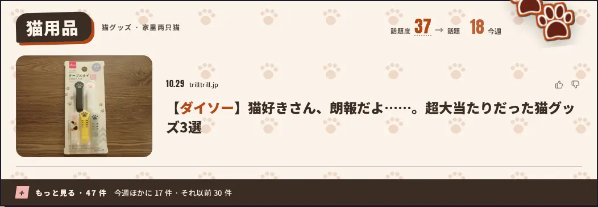
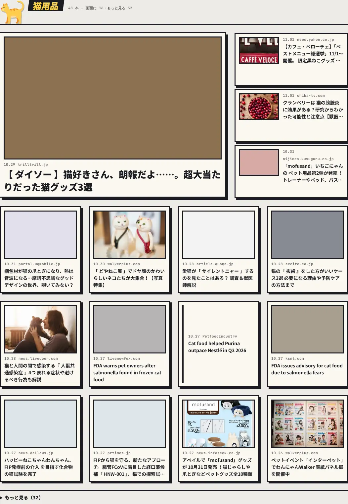
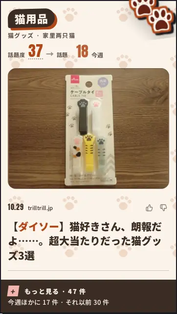
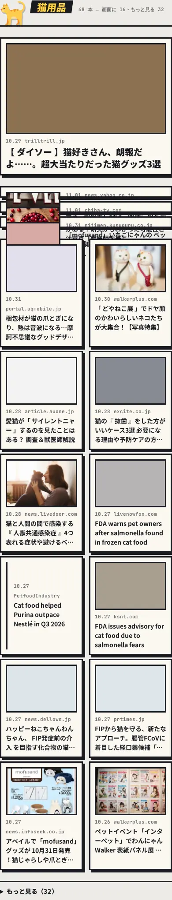
- 直した規則：同じ記事・同じ写真はページ全体で 1 回だけ（この場所で外した重なり 0 本）・升目の最後の段に穴を作らない・右の列は先頭の高さにそろえる・写真のない記事は字だけの札
- PC：穴 1% → 0%・中が空いたカード 0 → 0 枚・写真なし 0 → 1 枚・画面に出る記事（もっと見るは閉じたまま） 1 → 16 本
- スマホ：穴 0% → 0%・中が空いたカード 0 → 0 枚・写真なし 0 → 1 枚・画面に出る記事（もっと見るは閉じたまま） 1 → 16 本
チェーンソーマン
今の困りごと 指摘のあった場所（空白・重複・写真の大きさ）。数字は 2 つの画面を同じ幅で同じ方法で数えたもの
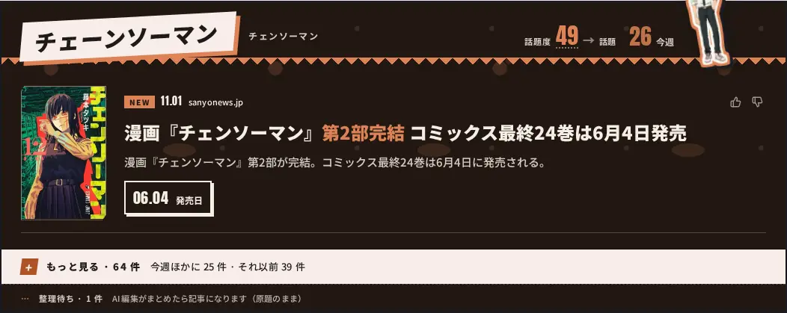
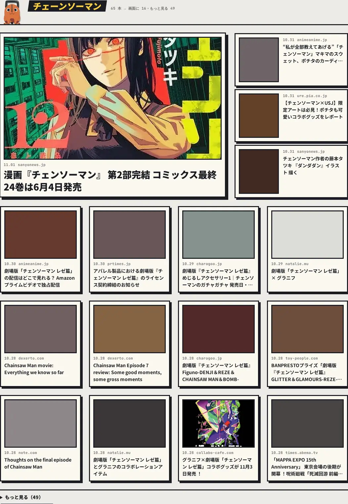
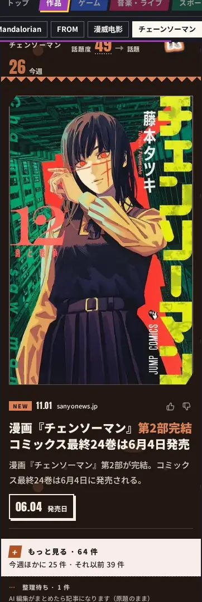
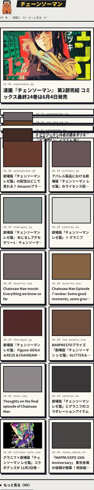
- 直した規則：同じ記事・同じ写真はページ全体で 1 回だけ（この場所で外した重なり 0 本）・升目の最後の段に穴を作らない・右の列は先頭の高さにそろえる・写真のない記事は字だけの札
- PC：穴 1% → 0%・中が空いたカード 0 → 0 枚・写真なし 0 → 0 枚・画面に出る記事（もっと見るは閉じたまま） 1 → 16 本
- スマホ：穴 0% → 0%・中が空いたカード 0 → 0 枚・写真なし 0 → 0 枚・画面に出る記事（もっと見るは閉じたまま） 1 → 16 本
ほかの注目
今の困りごと 指摘のあった場所（空白・重複・写真の大きさ）。数字は 2 つの画面を同じ幅で同じ方法で数えたもの
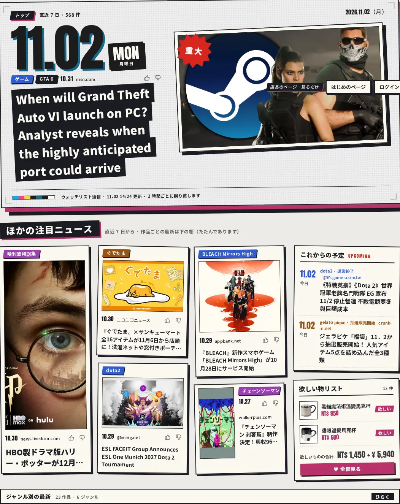
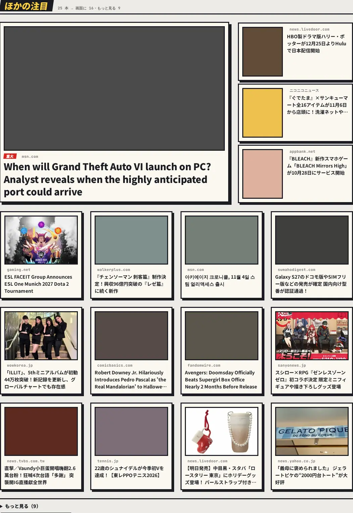
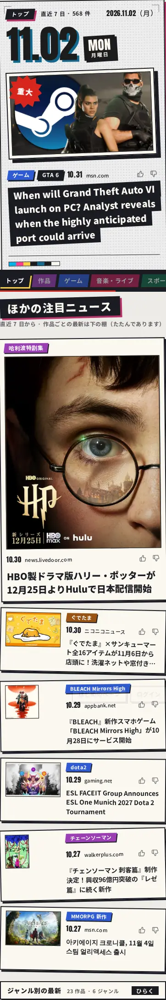
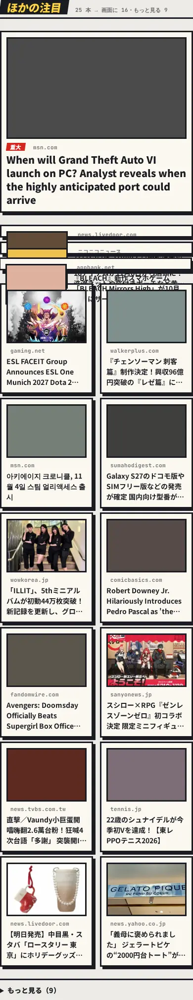
- 直した規則：同じ記事・同じ写真はページ全体で 1 回だけ（この場所で外した重なり 0 本）・升目の最後の段に穴を作らない・右の列は先頭の高さにそろえる・写真のない記事は字だけの札
- PC：穴 23% → 0%・中が空いたカード 3 → 2 枚・写真なし 0 → 0 枚・画面に出る記事（もっと見るは閉じたまま） 6 → 16 本
- スマホ：穴 7% → 0%・中が空いたカード 2 → 0 枚・写真なし 0 → 0 枚・画面に出る記事（もっと見るは閉じたまま） 7 → 16 本
気になるかも？
今の困りごと 指摘のあった場所（空白・重複・写真の大きさ）。数字は 2 つの画面を同じ幅で同じ方法で数えたもの
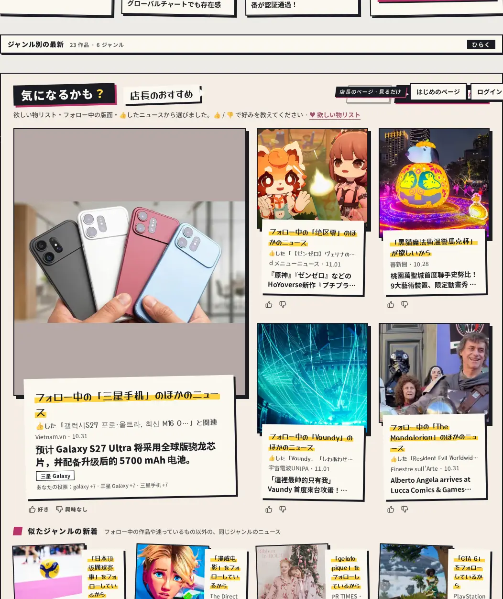
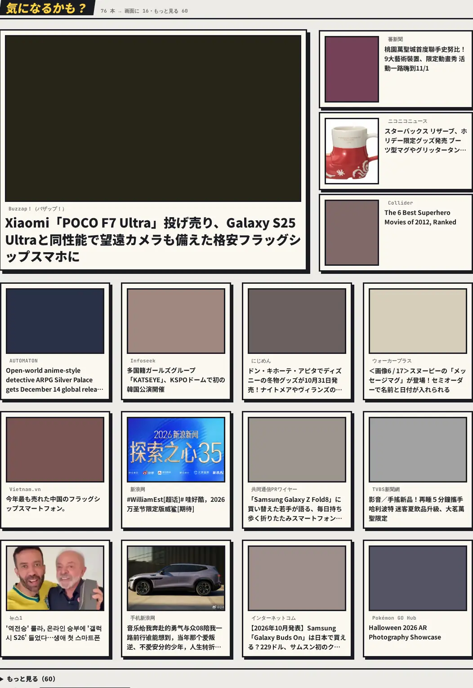
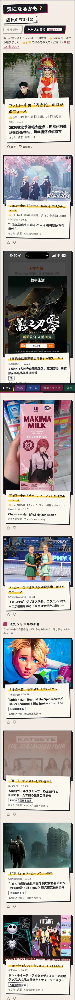
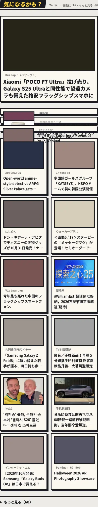
- 直した規則：同じ記事・同じ写真はページ全体で 1 回だけ（この場所で外した重なり 0 本）・升目の最後の段に穴を作らない・右の列は先頭の高さにそろえる・写真のない記事は字だけの札
- PC：穴 1% → 0%・中が空いたカード 0 → 2 枚・写真なし 0 → 0 枚・画面に出る記事（もっと見るは閉じたまま） 9 → 16 本
- スマホ：穴 1% → 0%・中が空いたカード 0 → 0 枚・写真なし 0 → 0 枚・画面に出る記事（もっと見るは閉じたまま） 9 → 16 本
Astrae Oratio
今の困りごと 指摘のあった場所（空白・重複・写真の大きさ）。数字は 2 つの画面を同じ幅で同じ方法で数えたもの
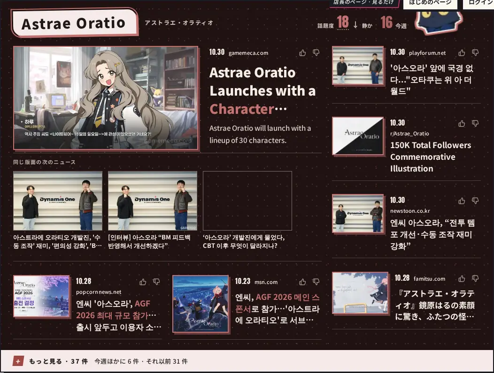
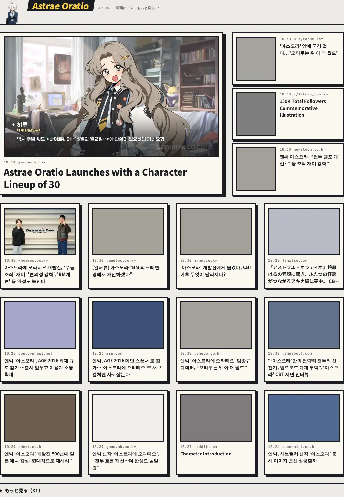
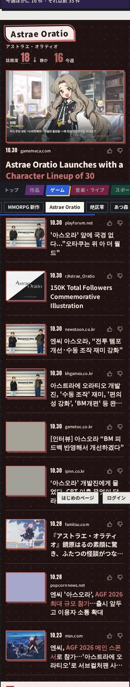
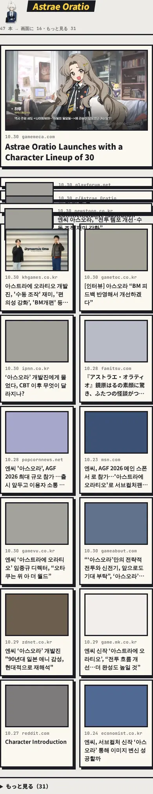
- 直した規則：同じ記事・同じ写真はページ全体で 1 回だけ（この場所で外した重なり 0 本）・升目の最後の段に穴を作らない・右の列は先頭の高さにそろえる・写真のない記事は字だけの札
- PC：穴 1% → 0%・中が空いたカード 0 → 0 枚・写真なし 0 → 0 枚・画面に出る記事（もっと見るは閉じたまま） 7 → 16 本
- スマホ：穴 0% → 0%・中が空いたカード 0 → 0 枚・写真なし 0 → 0 枚・画面に出る記事（もっと見るは閉じたまま） 10 → 16 本
BLEACH Mirrors High
今の困りごと 指摘のあった場所（空白・重複・写真の大きさ）。数字は 2 つの画面を同じ幅で同じ方法で数えたもの
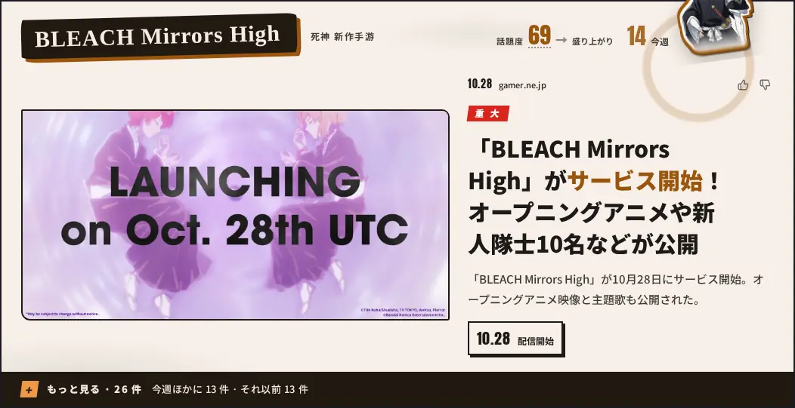
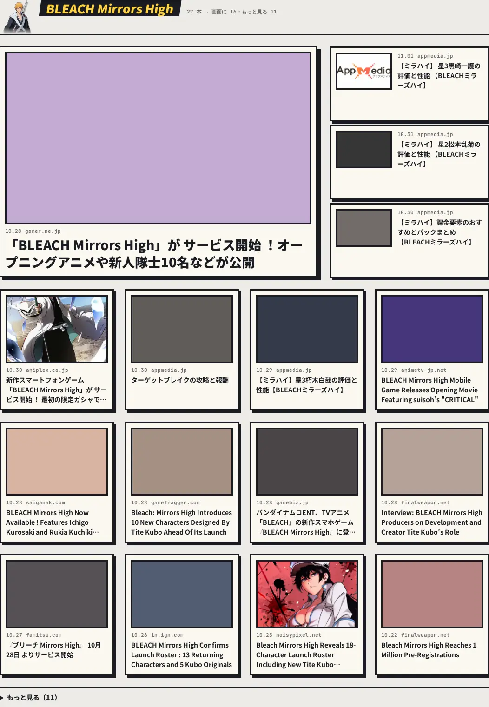
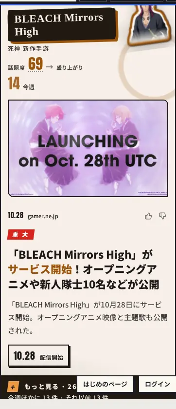
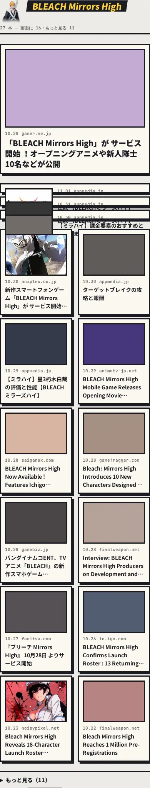
- 直した規則：同じ記事・同じ写真はページ全体で 1 回だけ（この場所で外した重なり 0 本）・升目の最後の段に穴を作らない・右の列は先頭の高さにそろえる・写真のない記事は字だけの札
- PC：穴 1% → 0%・中が空いたカード 0 → 0 枚・写真なし 0 → 0 枚・画面に出る記事（もっと見るは閉じたまま） 1 → 16 本
- スマホ：穴 0% → 0%・中が空いたカード 0 → 0 枚・写真なし 0 → 0 枚・画面に出る記事（もっと見るは閉じたまま） 1 → 16 本